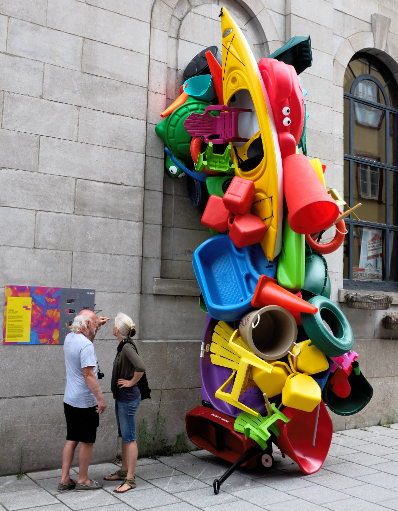

Day 84
Taken July 30th, 2014 in Ottawa, Canada
Fuji X100s 23mm 1/800 @ f/4.0 ISO 6400
Taken July 30th, 2014 in Ottawa, Canada Fuji X100s 23mm 1/800 @ f/4.0 ISO 6400...
Photo-a-day by Matt Thompson started May 8th, 2014.
Taken July 30th, 2014 in Ottawa, Canada
Fuji X100s 23mm 1/800 @ f/4.0 ISO 6400
Taken July 29, 2014 in Ottawa, Canada
Fuji X100s 23mm 1/2 @ f/8.0 ISO 1600
Taken July 28th, 2014 in Ottawa, Canada
Fuji X100s 23mm 1/320 @ f/8.0 ISO 2000
Taken July 27th, 2014 in Montreal, Canada
Fuji X100s 23mm 1/250 @ f/4.0 ISO 200
Taken July 27th, 2014 in Montreal, Canada
Fuji X100s 23mm 1/640 @ f/8.0 ISO 2000
Taken July 26th, 2014 in Quebec City, Canada
Fuji X100s 23mm 1/320 @ f/8.0 ISO 500
Taken July 26th, 2014 in Quebec City, Canada
Fuji X100s 23mm 1/320 @ f/8.0 ISO 500

Taken July 26th, 2014 in Quebec City, Canada
Fuji X100s 23mm 1/400 @ f/8.0 ISO 1250
Taken July 26th, 2014 in Quebec City, Canada
Fuji X100s 23mm 1/500 @ f/8.0 ISO 3200
Taken July 25th, 2014 in Quebec City, Canada
Fuji X100s 23mm 1/400 @ f/5.6 ISO 200
Taken July 25th, 2014 in Quebec City, Canada
Fuji X100s 23mm 1/500 @ f/5.6 ISO 800

Taken July 25th, 2014 in Quebec City, Canada
Fuji X100s 23mm 1/320 @ f/5.6 ISO 3200